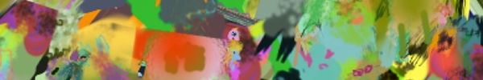

👹 ARTSTUFF.WTF

FRI 4/27
Chorégraphies et Cinéma
La Collectionneuse @ Navel
8pm - 2am
$15
La Collectionneuse x NAVEL present Chorégraphies et Cinéma A night of dance and films --Featuring Jean Genet's Un chant d'amour (1950). Dance performances: "Dirty work" - An excerpt from Saluti, Grace Palmer: Secrets of virtuous cycle management, presented by the Institut IDGAF and performed by Zena Bibler and Alexsa Durrans. New work by Barry Brannum. Work by Sara Silkin. A special mix of visuals on dance and choreographies. Post-reception and dance party with DJ Brian Tarney (Restless Nites).
LINK

SAT 4/28
VISIONWORLDS: Architecture of Immersion and Experience in Extended Reality
IDEAS Campus (UCLA Architecture)
2pm - 6:30pm
FREE
VISIONWORLDS: Architecture of Immersion and Experience in Extended Reality, will convene the brightest minds from the arts, architecture and the tech industry, for a symposium to examine the environmental applications of media, VR/AR, sensor interaction and robotic transformation of architectural spaces. In doing so, we'll explore the potential of extended reality to formulate a reformed agenda for the role of digital in the contemporary practice of architecture. Exhibition and Mixer 2:00-3:00 PM | Main Program 3:00-6:30 PM Alex McDowell, USC, World Building Institute Casey Rehm, SciArc Christiane Paul, The Whitney Museum, Parsons School of Design Guvenc Ozel, Ozel Office, UCLA A.UD Marcos Novak, UCSB Pussykrew, NEW INC/ New Museum NY Sasha Samochina, NASA JPL Timoni West, Unity
LINK
Peer-to-Peer Web
11:30am - 3pm
Folder Studio
FREE
There will be two brief talks, followed by a workshop and open time to hang. 1 An introduction to Enoki, an accessible peer-to-peer native publishing tool. 2 An overview of creating a dat:// plugin for Kirby as a way of bridging p2p and http. 3 A workshop on creating your first peer-to-peer site with (or without) Enoki. Everyone is welcome regardless of skill or familiarity; we’re here to provide a helping community. Please RSVP if planning to attend. Thanks!
LINK
On drawing, animation, and coding systems — Casey REAS and Jeffrey Alan Scudder in Conversation
Make Room
3:30pm - 6pm
$?
Join artists Casey REAS and Jeffrey Alan Scudder (Jeffrey Heart) for part interview, part lecture, and part show & tell as they sketch a squiggly line through the history of drawing, animation and coding systems. In addition to highlighting notable crossovers from computation, cinema, painting, and music, they'll be demonstrating a few of their own software works from recent years.
LINK
MAPS: Movement Arts Performance Space
Navel
7:30pm - 12:30pm
$11
The evening will feature new choreographic works by Samantha Blake Goodman, photography by Russell Hamilton, video by Nery Madrid, followed by a celebration with sounds by Foreigner (RAIL UP), Mia Carucci + guests. Performances begin 8:15pm
LINK
Hank Jackson, P.H.O.R.K., How to Dress Well (DJ)
TBA
9pm - 6am
$15/$20
Join us for a night of freak techno, break neck riddims, and liquid grooves. NYC's finest export Hank Jackson. With releases ranging from Anthony Naples' Proibito Records, Mister. Saturday Night, and most recently his own imprint anno. Hank is a prolific tour de force in dance music today. P.H.O.R.K. aka People’s Higher Order of Royal Kinship, LA Chinatowns finest hailing from Baltimore. With releases on Opal Tapes, NNA Tapes, Orange Milk Records, Sacred Phrases, Pastel Voids... Its hard to pinpoint an end to this powerhouse. Joanna Swan One of LA's finest and highly under-rated DJ's for those who know and those who don't. Come see her tear the roof off the place bumpin grooves to help you lose your mind. How to Dress Well (DJ Set). The ever talented Tom Krell-- with many notable releases on Domino Recording Co. and a new one suspected to come in late '18, Krell is slated to play a dark and pummeling set of techno. PLUS Secret Guests
LINK

SUN 4/29
A Series of Movements and Activations
Bed and Breakfast
1pm - 4pm
FREE
For this performance, Ali Prosch and Jacqueline Falcone have created a choreography of gestures and movement, with dancer Cristine Tatomer, to activate Prosch’s exhibition Come Undone.
LINK

ABOUT
ARTSTUFF.WTF is a minimal website listing page for selected mostly DIY art (and etc) events going on around Los Angeles. It is a personal list of 5 - 10 events sent out to friends weekly, and made available online here for bookmarking and quick reference. There is an archive of past listings. Sign up to receive weekly emails. Made by Lee Tusman.